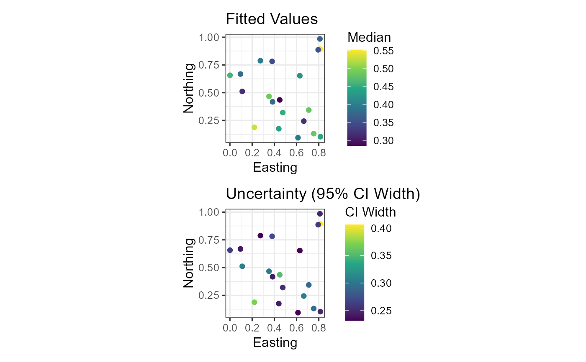

Create a multi-panel figure with the fitted-value map and the prediction-uncertainty map side by side.
Arguments
- x
A
tulpa_fitobject with spatial structure.- newdata
Optional data frame with prediction locations.
- ncol
Number of columns in the grid. Default 2.
- ...
Additional arguments passed to
plot_map().
Examples
# \donttest{
if (requireNamespace("ggplot2", quietly = TRUE)) {
set.seed(123)
n_sites <- 20
df <- data.frame(
y = rbinom(n_sites, 20, 0.4),
elevation = rnorm(n_sites),
site = factor(seq_len(n_sites)),
lon = runif(n_sites),
lat = runif(n_sites)
)
adj <- matrix(0, n_sites, n_sites)
for (i in 1:(n_sites - 1)) adj[i, i + 1] <- adj[i + 1, i] <- 1
fit <- tulpa(
y ~ elevation + spatial(site),
data = df,
family = "binomial",
n_trials = rep(20L, n_sites),
spatial = spatial_car(adj, group_var = "site"),
mode = "laplace"
)
cc <- df[, c("lon", "lat")]
plot_map_panel(fit, coords = cc)
plot_map_panel(fit, coords = cc, ncol = 1)
}

# }